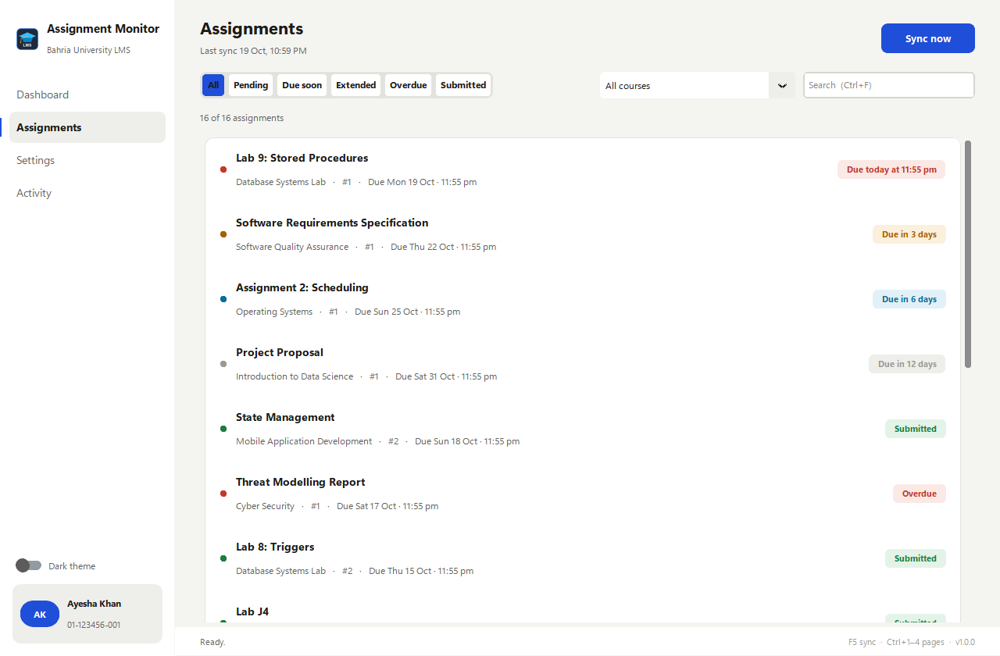
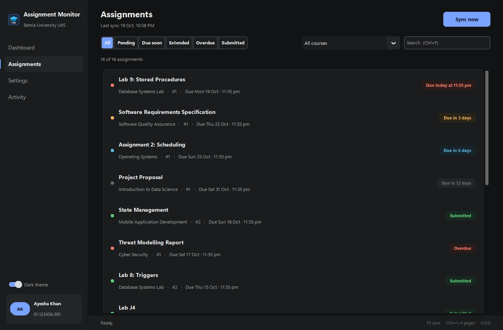

A dashboard that leads with your next deadline
Next due item with a countdown, counters for pending, due today, due this week, extended, overdue and submitted, a needs-attention list sorted by date, and progress per course.

Assignment Monitor signs in to the Bahria University portal for you, reads every course, catches extended deadlines the portal hides, and reminds you out loud on the day something is due. Set it up once; it runs on its own.

Everything on the dashboard answers it. No feeds, no clutter, no logging in to six course pages to find out.
Next due item with a countdown, counters for pending, due today, due this week, extended, overdue and submitted, a needs-attention list sorted by date, and progress per course.
When a teacher moves a date, the LMS squashes old and new into one string. The app reads both and flags the change.
On the day something is due and still unsubmitted, you get a spoken reminder and a Windows notification every hour until it's done.
Three Windows tasks under your own account. No admin rights, no background service, and they work even when the app window is closed.
Close the window and it keeps running quietly. Right-click the tray icon to open, sync now, or quit. Optionally starts with Windows.
Warm neutral surfaces, one accent colour, a proper type scale. The theme switch restyles the live window and is remembered.


Checks the project's GitHub releases on start (switchable). One click downloads the new installer, closes the app, reinstalls and reopens. Your sign-in and data are kept.
Run the setup. It installs for your user account only, so no administrator password, and adds a Start Menu and Desktop icon.
Enter your enrollment number, CMS password and campus. The app verifies the sign-in live and reads every course of the current semester.
Leave "Check automatically" ticked. From then on it checks at 7 PM, after you sign in to Windows, and hourly on due days.
Nothing blinks, nothing nags. The information you need is a glance away; the rest stays out of the way.
There is no server behind this app and no account to create. It does on your computer exactly what you would do by hand in a browser, nothing more.
Your portal password is protected with Windows Data Protection (DPAPI) for your user account. Another user or another PC cannot read it, and it is never written to the log.
The only connections are to cms.bahria.edu.pk and lms.bahria.edu.pk over HTTPS, plus an optional, switchable check of GitHub for new versions. No analytics, no telemetry.
MIT licensed. Every release is built by GitHub Actions straight from the public repository, with tests and a dependency audit on every commit. You can build it from source in one command.
Yes. The warning appears because the installer is not code-signed, which costs money or a certificate programme the project is applying for. Click "More info", then "Run anyway". If you prefer, build it yourself from the source code with one command; the result is identical.
No. Assignment Monitor is an independent student project. It is not affiliated with, endorsed by, or supported by Bahria University.
It signs in with your own credentials and reads your own assignments page, the same way you would in a browser. It never submits, uploads or changes anything on the portal, and it never sends your data anywhere.
If Chrome is installed it is used in the background. If not, a browser engine is downloaded once automatically. You never see a browser window.
For the 7 PM check, yes, but if it was off, a catch-up check runs two minutes after you next sign in to Windows. The hourly reminder only fires while something is due that day.
Windows Settings → Apps → Assignment Monitor → Uninstall. That removes the app and its background tasks. To wipe everything, also delete the folder %LOCALAPPDATA%\Assignment Monitor.
Free, open source, three minutes to set up.